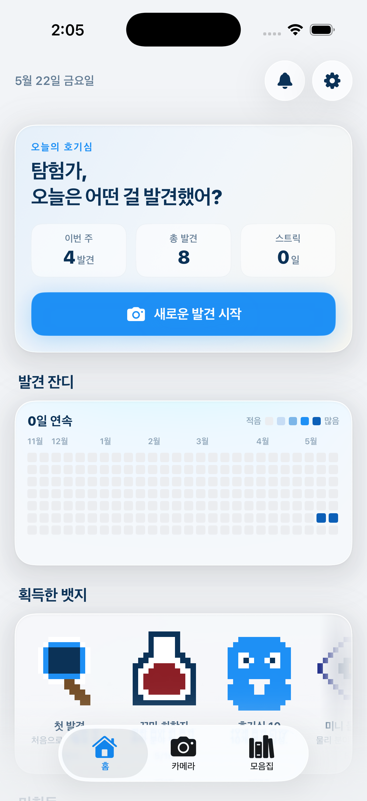
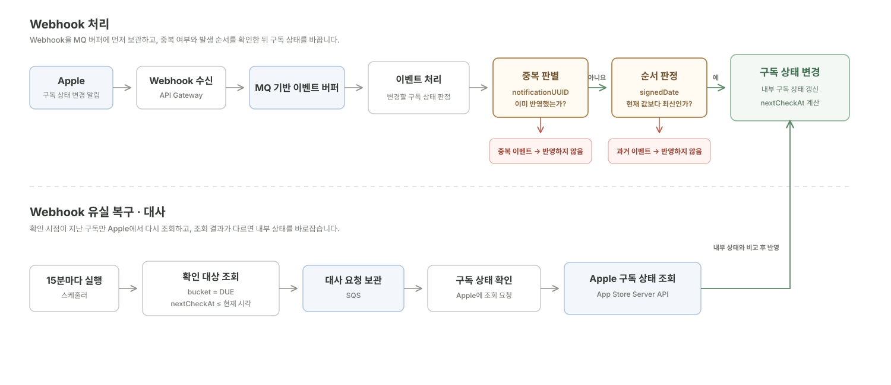

창업팀 프로젝트 · 2026.05 — 현재 Founding Team Project · May 2026 — Present
Quriosity
사용자가 일상에서 발견한 대상을 촬영하면, 생성형 AI가 과학적 원리와 관련 지식을 분석해 제공하는 iOS 학습 앱입니다. An iOS learning app that turns everyday discoveries into science explanations and related knowledge through generative AI.
3인 창업팀의 유일한 Backend Engineer로서 Serverless 인프라와 핵심 비즈니스 로직을 설계·개발했습니다. Sole Backend Engineer in a three-person founding team, responsible for the serverless infrastructure and core business logic.
제품 화면 Product Screens
사용자는 일상에서 발견한 대상을 기록하고, 생성형 AI가 분석한 과학적 설명을 확인할 수 있습니다. Users capture discoveries from everyday life and explore science explanations generated from the analysis.


주요 문제 해결 경험 Technical Challenges
01
Apple App Store Webhook 이벤트의 유실, 순서역전, 중복에도 데이터 일관성을 유지하는 구독 상태 관리 & 대사 시스템 설계 Subscription State Management and Reconciliation for Lost, Out-of-Order, and Duplicate App Store Webhook Events
SQS · 고유 식별자 · 서명시각 · nextCheckAt GSI를 활용해 실시간 반영과 유실 복구 경로를 분리했습니다. Separated real-time state updates from loss recovery with SQS, event identifiers, signed dates, and a nextCheckAt GSI.
- MQ(SQS)를 버퍼 계층으로 활용해 Webhook 이벤트 유실을 방지하고, 이벤트 서명시각과 고유 식별자 비교를 통해 순서역전 및 중복 해결
- 구독 상태 및 구독 유효기간 별로 Freshness 요구 수준이 다르다는 점을 고려해, 일괄 배치가 아닌 확인 시점 기반 선별 후 폴링 방식으로 설계
- Used MQ (SQS) as a buffering layer and compared signed dates and unique identifiers to reject duplicate and out-of-order Webhook events.
- Selected only subscriptions due for verification instead of polling every subscription on the same schedule, based on status and expiration.

Fig. App Store Webhook 처리 및 구독 상태 대사 Data Flow Fig. App Store Webhook Processing and Subscription Reconciliation Data Flow 도식을 좌우로 드래그하거나 확대해 확인할 수 있습니다. Drag horizontally or zoom in to explore the diagram.
도입 배경 Background
Apple In-App 결제 방식의 구독제 비즈니스 모델을 적용했습니다.
무료 사용자는 하루 3회, 유료 사용자는 하루 10회까지 분석 기능을 이용할 수 있습니다.
따라서 분석을 시작하기 전에 사용자의 현재 구독 상태를 기준으로 이용 한도를 판단해야 합니다.
The product uses an Apple In-App Purchase subscription model.
Free users can run three analyses per day, while paid users can run ten.
The service therefore needs the current subscription state before deciding whether an analysis can start.
결론: Webhook의 전달 상태와 관계없이, 서비스 백엔드가 신뢰할 수 있는 구독 상태를 유지해야 합니다. Conclusion: The backend needs a trustworthy subscription state even when Webhook delivery is incomplete.
문제 정의 Problem Definition
① 메시지 중복 및 순서 역전 문제 ① Duplicate and Out-of-Order Messages
- 같은 Webhook 이벤트가 다시 도착하면 이미 반영한 구독 상태를 중복 처리할 수 있습니다.
- 과거에 생성된 이벤트가 뒤늦게 도착하면 최신 구독 상태를 이전 상태로 되돌릴 수 있습니다.
- 처리기가 이벤트마다 중복 여부와 시간 순서를 판정한 뒤 상태 변경을 허용해야 합니다.
- A retried Webhook can apply the same subscription change more than once.
- A delayed older event can overwrite a newer subscription state.
- The consumer must decide whether each event is new and newer before applying it.
② 메시지 유실 문제 ② Lost Messages
- Webhook이 도착하지 않으면 Apple의 실제 구독 상태와 서비스가 보관한 상태가 달라질 수 있습니다.
- 도착하지 않은 이벤트는 Webhook 처리 경로만으로 발견할 수 없습니다.
- Apple 상태를 별도로 확인하고 내부 상태를 다시 맞추는 복구 경로가 필요합니다.
- A missing Webhook can leave the internal state different from Apple's subscription state.
- The Webhook processing path cannot detect an event that never arrived.
- An independent path must check Apple and repair the internal state.
해결 전략 설계 Solution Design
① 메시지 중복 및 순서 역전 문제: 고유 식별자와 서명시각을 기준으로 반영 여부 판정 ① Duplicate and Out-of-Order Messages: Decide with Event ID and Signed Date
- 비동기 처리: API Gateway가 Webhook 요청을 SQS에 직접 전달하고, Notification Consumer가 큐에서 메시지를 가져와 구독 상태를 갱신합니다.
- 중복 판별: Consumer가
notificationUUID를 이벤트 테이블에 조건부로 저장해, 같은 이벤트가 다시 도착해도 한 번만 반영합니다. - 순서 판정: 이벤트의
signedDate가 현재 저장된lastSignedDate보다 최신일 때만 상태 변경을 허용합니다. - 원자적 반영: 이벤트 기록과 구독 상태 변경을 DynamoDB Transaction으로 함께 실행해, 둘 중 하나만 반영되는 상황을 막았습니다.
- Asynchronous processing: API Gateway sends the Webhook request directly to SQS, and the consumer updates state independently.
- Duplicate detection: A conditional write on
notificationUUIDallows the same event to take effect only once. - Ordering: A state change is allowed only when the event's
signedDateis newer than the storedlastSignedDate. - Atomic update: The event record and subscription state update run in one DynamoDB transaction.
② 메시지 유실 문제: 상태별로 다음 확인 시점을 정하고, 확인이 필요한 구독만 Apple과 대사 ② Lost Messages: Reconcile Only Subscriptions Due for Verification
Webhook이 도착하지 않으면 내부 구독 상태가 Apple과 달라질 수 있습니다.
이를 복구하기 위해 다음 두 가지 방법을 검토했습니다.
A missing Webhook can leave the internal subscription state different from Apple's state.
I considered two ways to repair that mismatch.
두 방법 중 B. 별도의 대사 프로세스를 활용한 최종 일관성 방식을 선택했습니다.
매 분석 요청마다 Apple API를 조회하는 방식에는 다음과 같은 제약이 있기 때문입니다.
I selected B. eventual consistency through a separate reconciliation process.
Calling Apple on every analysis request introduces the following constraints.
- Rate Limit: 구독 상태 조회 API가 50 RPS로 제한되므로, 분석 처리량의 상한이 Apple의 정책에 의해 결정됩니다.
- 응답 지연: Apple API 호출 시간이 분석 결과를 반환하기까지 걸리는 시간에 더해집니다.
- 장애 전파: 서비스 백엔드가 정상이어도 Apple API에 장애가 발생하면 사용자가 분석 기능을 이용할 수 없습니다.
- Rate limit: The 50 RPS subscription-status API limit makes Apple's policy the upper bound for analysis throughput.
- Latency: The Apple API call adds to the time required to return an analysis result.
- Failure propagation: An Apple API outage can block analysis even while the service backend is healthy.
선택한 대사 프로세스 Selected Reconciliation Process
- 상태별 다음 확인 시점 계산: 활성·유예 상태는 늦어도 24시간 뒤에 확인하되, 만료가 더 가까우면 만료 1시간 전에 확인합니다.
- 상태별 다음 확인 시점 계산: 결제 재시도 상태는 7일 뒤에 확인하고, 만료·철회 상태는 접근 종료 후 60일 동안 7일 간격으로 확인합니다.
- 대사 대상 선별: DynamoDB GSI에서
bucket = DUE이면서nextCheckAt <= 현재 시각인 구독만 Query로 조회합니다. - 15분 주기 Sweep: EventBridge Scheduler가 Sweep Lambda를 실행하고, Lambda가 확인 시점이 지난 구독의
originalTransactionId를 SQS에 전달합니다. - Apple 상태 확인: Subscription Worker가 App Store Server API에서 구독 상태를 조회하고, 내부 상태와 다르면 Apple 상태를 기준으로 갱신합니다.
- 대사 대상에서 제외: 만료·철회 후 60일이 지나면
bucket과nextCheckAt을 제거해 Sparse GSI와 이후 Sweep 대상에서 제외합니다.
- Next check: Active and grace-period subscriptions are checked within 24 hours, or one hour before expiration when that comes first.
- Next check: Billing-retry subscriptions are checked after seven days, while expired and revoked subscriptions are checked every seven days for a 60-day window.
- Target selection: The DynamoDB GSI queries only records where
bucket = DUEandnextCheckAt <= now. - 15-minute sweep: EventBridge Scheduler invokes the Sweep Lambda, which sends each due
originalTransactionIdto SQS. - Apple verification: The Subscription Worker fetches Apple state and updates internal state when the two differ.
- Sparse-index exit: Removing
bucketandnextCheckAtafter the 60-day window removes the record from both the GSI and future sweeps.
Webhook이 도착하지 않아 내부 상태가 틀어지더라도, 이후 확인 과정에서 Apple 상태를 다시 가져와 최종적으로 같은 상태로 맞춥니다. Even when a Webhook is lost, a later verification fetches Apple state and brings the internal state back into agreement.
검증 및 결과 Validation & Results
- 중복 이벤트: 같은
notificationUUID를 두 번 처리해도 이벤트가 한 건만 저장되는지 통합 테스트로 확인했습니다. - 순서 역전: 현재 값보다 오래된
signedDate의 만료 이벤트가 도착해도 활성 상태가 유지되는지 확인했습니다. - 대사 대상 선별: 현재 시각 이전의 구독만 SQS에 들어가고, 미래 시각의 구독과 Sparse GSI에서 빠진 구독은 제외되는지 확인했습니다.
- 상태별 확인 주기: 활성·유예·결제 재시도·만료·철회 상태의 경계 시각을 단위 테스트로 검증했습니다.
- Duplicates: Integration tests confirm that processing the same
notificationUUIDtwice stores only one event. - Ordering: An expiration event with an older
signedDatecannot regress an active subscription. - Sweep selection: Only due subscriptions enter SQS; future records and records absent from the sparse GSI are excluded.
- State-based cadence: Unit tests cover boundary times for active, grace-period, billing-retry, expired, and revoked states.